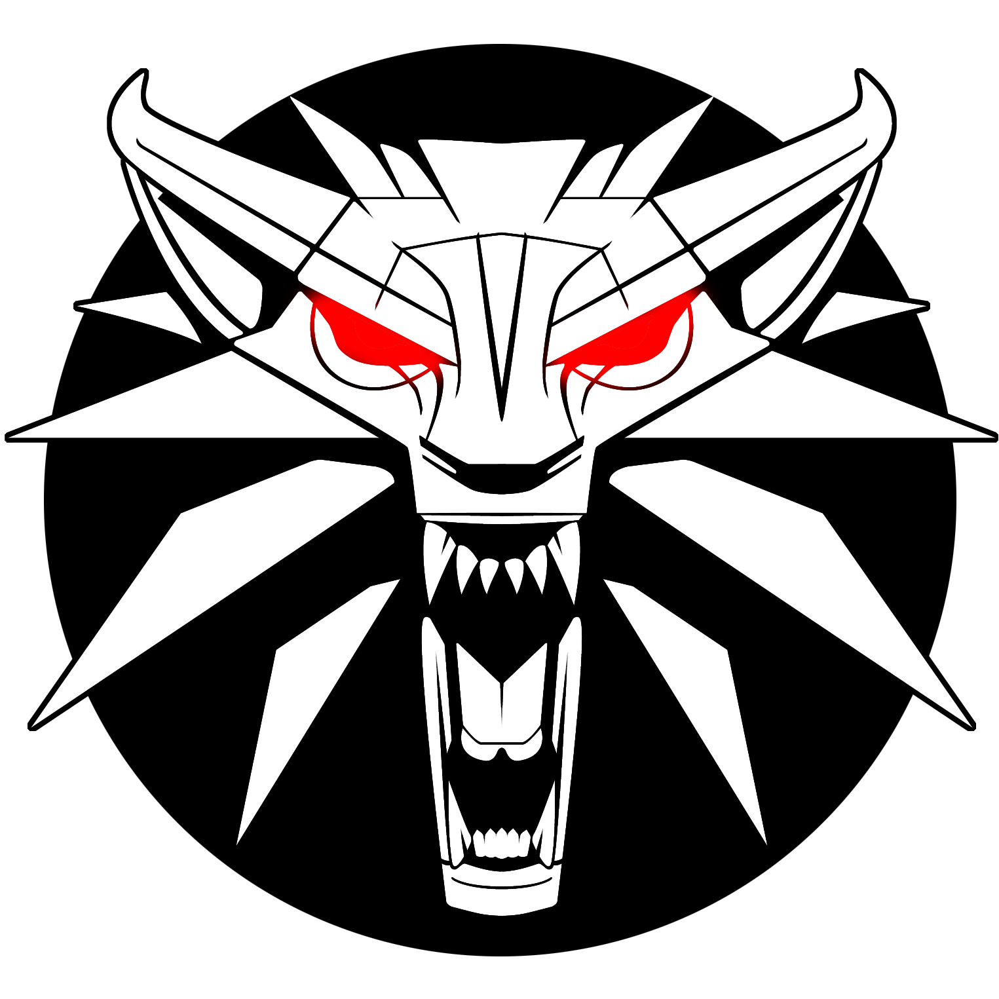
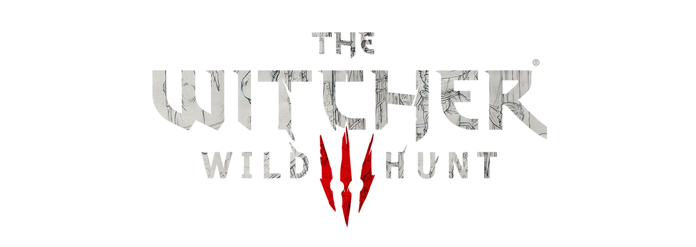

Our Vk


Когда 15 мая 2015 года вышел третий «Ведьмак», он стал поистине впечатляющей игрой. И недавно любовь серии у многих разгорелась вновь, главным образом благодаря одноименному сериалу от Netflix. Теперь многие проходят ее впервые или пытаются найти новые приключения. Особенно это заметно по количеству игроков в «Ведьмака 3» — оно даже больше, чем на момент выхода – это действительно грандиозно. Игра в стиле фэнтези, мир которой основан на славянской мифологии, повествует о ведьмаке Геральте из Ривии, охотнике на чудовищ, чья приёмная дочь Цири находится в опасности, будучи преследуемой Дикой Охотой — загадочной потусторонней силой, тайна которой раскрывается по ходу игры. Многие детали сюжета отсылают к книгам, написанным Сапковским, но сюжет остаётся связанным с первыми двумя частями и подводит итог трилогии, начатой первой игрой, вышедшей восемью годами ранее. В отличие от предыдущих игр, действие «Ведьмака 3» происходит в открытом мире и фокусируется на использовании боевых и детективных навыков Геральта для выполнения заказов и изучения окружающей среды. Всё это — часть многоуровневого основного квеста со множеством второстепенных миссий, который может быть пройден с 36 различными концовками. Игра была разработана за три с половиной года с бюджетом, близким к бюджетам AAA-игр больших западных студий. Её создатели хотели подтвердить способность европейских студий разрабатывать качественные ролевые игры, в то время как игра всё дальше и дальше отходит от канонического сюжета литературной саги «Ведьмак», пользующейся большой популярностью в Польше.